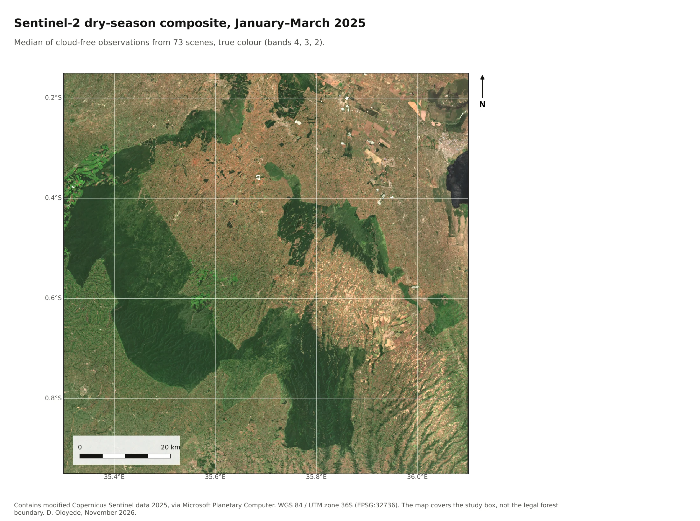
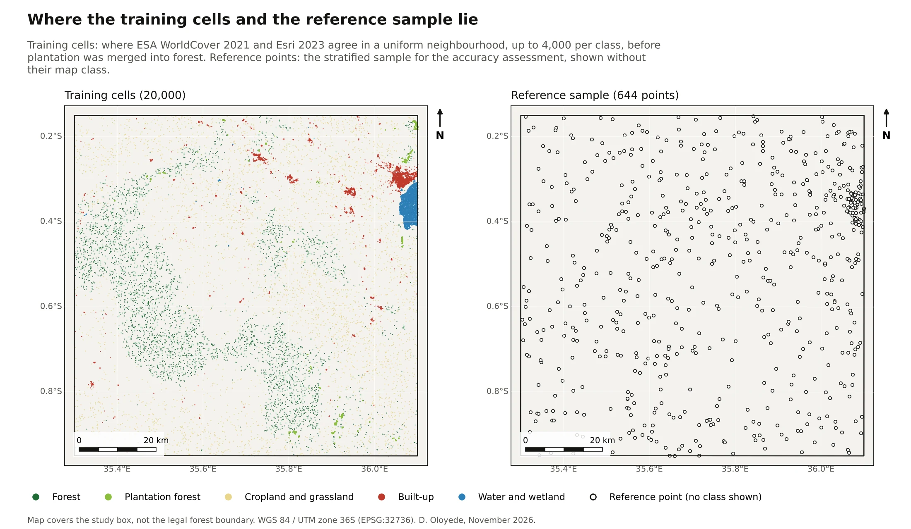
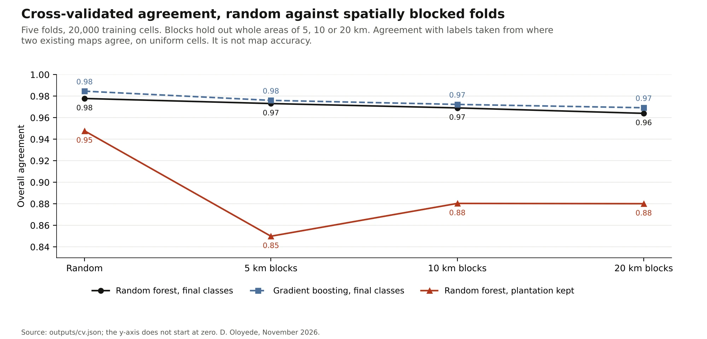
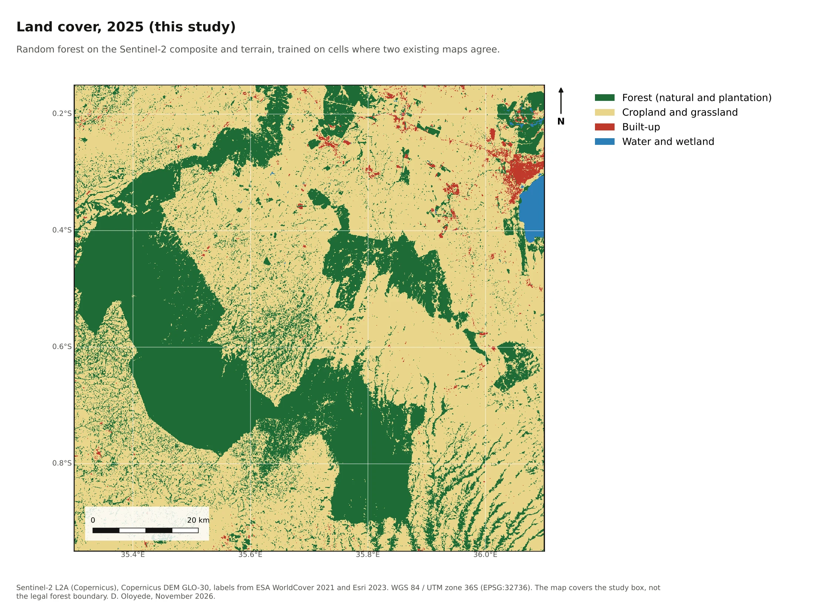
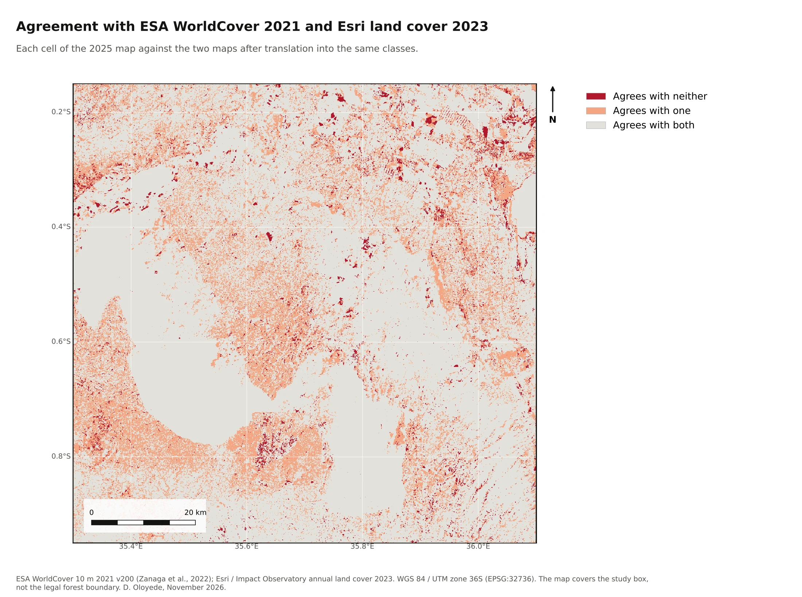
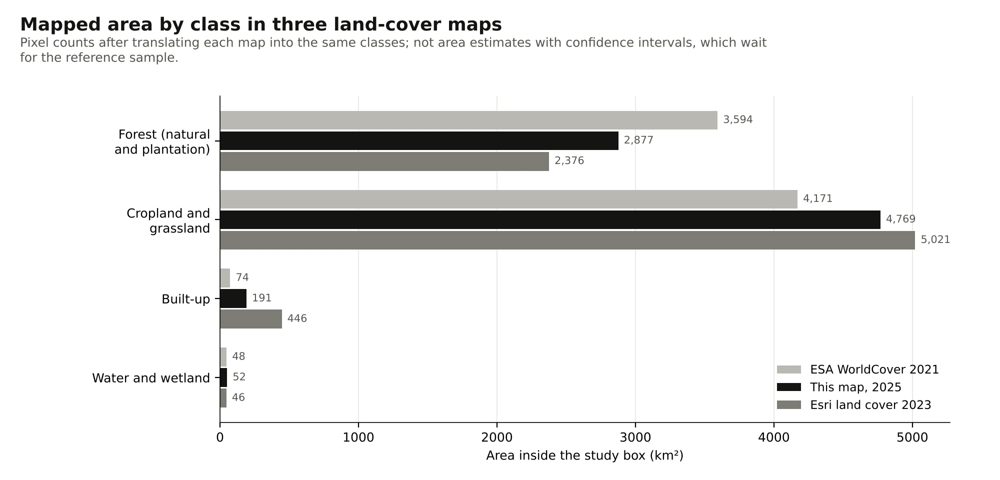
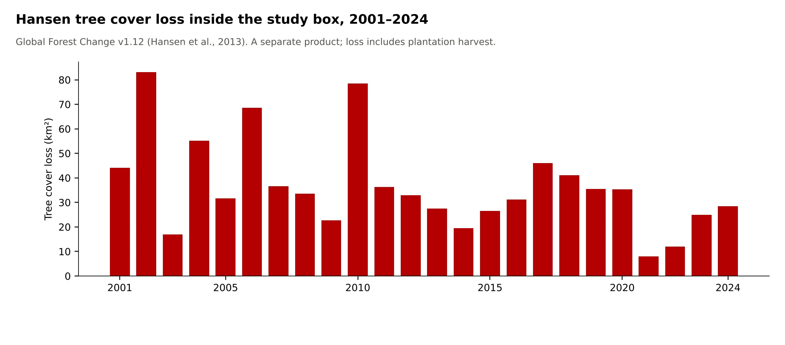

Mapping land cover in the Mau Forest Complex, Kenya, with Sentinel-2: a classifier tested by spatially blocked cross-validation, and a stratified sample design for accuracy and area estimation
David OloyedeNovember 2026
Abstract
We map land cover in 2025 over a 7,889 km² box around the Mau Forest Complex in western Kenya from a cloud-masked median of 73 Sentinel-2 scenes taken from 2 January 2025 to 31 March 2025, with Copernicus elevation and slope. Training labels were not drawn by hand: they are cells where ESA WorldCover 2021 and the Esri land cover map for 2023 agree on a class. A random forest separates forest, cropland and grassland, built-up land, and water and wetland. A separate plantation forest class, labelled from a 2015 forest management map, did not pass a rule written into the code before cross-validation was run (the rule was not pre-registered): its recall under 10 km blocked cross-validation was 0.61, against a required 0.70. Plantations are therefore mapped with forest, and no bare-ground class could be trained. Overall agreement with the map-agreement labels is 0.98 with random cross-validation and 0.97 with 10 km spatial blocks; with the plantation class kept, it falls from 0.95 to 0.88. These figures measure agreement with labels from existing maps on uniform cells, not map accuracy. The map shows 2,877 km² of forest (36% of the box), against 3,594 km² in WorldCover and 2,376 km² in the Esri map; it agrees with WorldCover on 83% of the box and with the Esri map on 84%. Because the training labels are the cells where these two maps agree, this agreement is partly built in and is not evidence of accuracy. Accuracy and stratified area estimates are pending the labelling of a 644-point stratified reference sample, for which the study provides the sample and a labelling tool; no open reference data set had enough points inside the box.
Keywords: land cover; Sentinel-2; random forest; spatial cross-validation; area estimation; Mau Forest; Kenya
1. Introduction
The Mau Forest Complex in western Kenya is a group of montane forest blocks surrounded by smallholder farms, tea estates, tree plantations and towns. In the Eastern Mau, more than 40% of the forest land present in 1976 had been converted to other uses by 2014, and the conversion has been tied to land policy and political competition (Kweyu et al., 2020). Global land-cover maps now cover the area every year at 10 m, but they disagree with each other where forest, farms and planted trees mix, and the accuracy figures reported for them are assessed over large regions, not for a single landscape.
Two practical problems sit behind any new map of an area like this. The first is labels. Without field data, a map needs reference labels from somewhere, and labels drawn by one person from imagery are slow to collect and hard to check. Taking training labels from existing maps, filtered to keep reliable cells, is one recognised way to get many training labels quickly (Radoux et al., 2014; Zhang et al., 2021); here we use the cells where two maps agree. It carries the errors and the definitions of those maps into the new one. The second is how accuracy is tested. Random cross-validation puts neighbouring cells, which look alike, into both the training and the test folds, and can make a classifier look better than it is in places it has not seen; blocking the folds in space is one remedy (Roberts et al., 2017; Ploton et al., 2020).
This study asks three questions for 2025: which land-cover classes can be separated in the Mau Forest area from a dry-season Sentinel-2 composite with labels taken from existing maps; how much the cross-validated estimate changes when the folds are blocked in space; and how the new map compares with ESA WorldCover, the Esri land cover map and Hansen forest loss. Unbiased accuracy and area estimates need an independently collected probability sample of reference labels (Olofsson et al., 2014; Stehman & Foody, 2019). We looked for one and did not find enough points inside the box, so the study also provides a sample design and a labelling tool, and reports those estimates as pending.
2. Data and methods
2.1 Study area
The study area is a rectangle from 35.30 to 36.10°E and 0.15 to 0.95°S (7,889 km²), around the Mau Forest Complex in Narok, Nakuru, Bomet and Kericho counties. It is a box drawn around the forest blocks, not the legal forest boundary, and it includes farmland, tea estates, towns and part of Lake Nakuru. All rasters are on one grid of 20 m cells in WGS 84 / UTM zone 36S.
2.2 Sentinel-2 composite and terrain
We used Sentinel-2 Level-2A surface reflectance (Drusch et al., 2012) from the Microsoft Planetary Computer: all 73 scenes over tiles 36MYD, 36MYE, 36MZD and 36MZE from 2 January 2025 to 31 March 2025 with less than 20% cloud cover. Scenes from one date and orbit were joined into one acquisition (29 acquisitions). Cells were kept where the scene classification layer marks vegetation, bare soil, water or unclassified, and the median of the kept values was taken for ten bands (B02 to B08, B8A, B11, B12; the 10 m bands averaged to 20 m). The median cell in the box has 11 clear observations and 95% of cells have at least 9. Four indices were added: NDVI, NDWI (green and near infrared), NDMI (near infrared and shortwave infrared 1) and an NBR-type index (near infrared and shortwave infrared 2). Elevation from the Copernicus DEM GLO-30 (ESA, 2022), resampled bilinearly to 20 m, and slope computed from it bring the total to 16 features per cell.
2.3 Classes and training labels
The candidate classes were forest, plantation forest, cropland and grassland, built-up, water and wetland, and bare ground. Training labels come from existing maps, not from field visits or image interpretation. A cell is labelled where ESA WorldCover 2021 v200 (Zanaga et al., 2022), aggregated to 20 m by the most common value, and the Esri / Impact Observatory annual land cover map for 2023 (Karra et al., 2021) put it in the same class, and where its whole 3 × 3 neighbourhood carries the same label, which keeps mixed edge cells out. The two maps agree, before the neighbourhood rule, on 73% of the box. Neither map has a plantation class, so tree cells were split with the global forest management map for 2015 (Lesiv et al., 2022): plantation forest where it shows planted or plantation forest, forest where it shows naturally regenerating forest. Tree cells it calls agroforestry, which covers 39% of the box, got no tree label. Tree cells with Hansen loss in 2021–2024 were dropped, because the maps may predate the loss. From the eligible cells we drew a stratified random sample of up to 4,000 cells per class (20,000 cells in all).
The class scheme was then set from what the data separate, by a rule written into the code before cross-validation was run (not pre-registered): plantation forest stays a class only if its precision and recall both reach 0.70 under 10 km blocked cross-validation with the random forest; otherwise its cells become forest.
2.4 Classifiers and cross-validation
The map is made with a random forest (Breiman, 2001) of 300 trees, at least two samples per leaf and the square root of the number of features tried at each split. A histogram gradient-boosting classifier (Friedman, 2001; scikit-learn, Pedregosa et al., 2011) with 300 iterations is the comparison. Neither was tuned. Both were evaluated with 5-fold cross-validation in two ways: random folds stratified by class, and spatial blocks of 5, 10 and 20 km on the UTM grid, assigned to folds so that classes are spread across folds (the SpatialBlockKFold class of the author’s spatial-stats-core package, after Roberts et al., 2017). The out-of-fold predictions of all five folds are pooled before computing precision, recall, F1 and overall agreement. The blocks have no buffer between training and test cells, so cells on either side of a block edge can be close: the smallest distance from a test cell to a training cell is 28 m for 10 km blocks, and the median distance, averaged over folds, is 2,787 m, against 72 m for random folds.
2.5 Comparison maps
WorldCover 2021 and Esri 2023 were translated into the study’s classes (WorldCover tree cover to forest; shrubland, grassland and cropland to cropland and grassland; built-up; water, herbaceous wetland and mangroves to water and wetland; Esri trees, crops and rangeland, built area, water and flooded vegetation in the same way; bare ground to other) and compared cell by cell with the 2025 map. Hansen Global Forest Change v1.12 (Hansen et al., 2013) gives tree cover in 2000 and the year of stand-replacing loss from 2001 to 2024. It is a separate product with its own definition of trees, and loss includes plantation harvest, so it is used as context, not as a check. Loss areas by year are computed on the Hansen grid inside the box.
2.6 Reference data and the planned accuracy assessment
We searched for open, independently collected reference points inside the box. The Geo-Wiki crowdsourced data of 2011–2012 (Fritz et al., 2016, 2017) have 6 locations inside it. The Geo-Wiki global reference data set for 2015 at 10 m (Lesiv et al., 2025a, 2025b) has 21 sites, each a 100 m square labelled as 100 cells of 10 m. Neither set reaches the 100 points we aimed for, both predate 2025, and neither was drawn from the strata of this map, so they cannot give unbiased accuracy or area estimates. We use the 21 sites only for a descriptive check.
Instead, we drew a stratified random sample from the 2025 map with the map classes as strata. The total size follows Olofsson et al. (2014) and Cochran (1977): n = (Σ Wi Si / S(Ô))², with Wi the mapped share of class i, Si = √(Ui(1 − Ui)) for an assumed user’s accuracy Ui (0.90 for forest (natural and plantation), 0.85 for cropland and grassland, 0.70 for built-up, 0.90 for water and wetland), and a target standard error of overall accuracy S(Ô) of 0.015. This gives 509 points (1,145 for a target of 0.01). Each class gets its proportional share, raised to at least 75 points for the small classes, which makes 644 points: 186 forest (natural and plantation), 308 cropland and grassland, 75 built-up, 75 water and wetland. With 75 points and an assumed user’s accuracy of 0.70, the 95% interval on built-up user’s accuracy would be about ±0.10. The points are labelled on high-resolution imagery with the labelling page that comes with the study, following a written protocol whose class definitions match the translation of WorldCover and Esri classes in Section 2.5. The labelling page shows only a location, not the map class; the interpreter is the map author and has seen the map, so labelling is blind per point, not fully independent. The labels then give the error matrix, overall, user’s and producer’s accuracy and stratified area estimates with 95% intervals (Olofsson et al., 2014).
3. Results
3.1 Composite and training sample

The composite has no gaps worth noting: 0.002% of cells in the box have no clear observation. Eligible training cells were plentiful for forest (4,212,672), cropland and grassland (6,563,573), built-up land (54,236) and water and wetland (108,664), but plantation forest had only 4,927 cells and bare ground had none after the neighbourhood rule (42 agreeing cells before it), so no bare class was trained. Figure 2 shows where the training cells and the reference points lie.

3.2 Class scheme and cross-validation
With the plantation class kept, both classifiers agree well with the labels under random cross-validation, but blocked cross-validation shows that plantations are mostly confused with forest in places the model has not seen (Table 1). Plantation recall falls from 0.92 with random folds to 0.61 with 10 km blocks, and forest precision from 0.93 to 0.71, because plantation cells are predicted as forest. The plantation class therefore failed the rule and was merged with forest. With the available plantation labels (0.12% of the box in the 2015 100 m map), plantations could not be separated from natural forest.
Table 1. Cross-validated agreement with map-agreement labels, random forest, with the plantation class kept (candidate scheme) and in the final scheme. Values pool the out-of-fold predictions of five folds.
| Scheme | Folds | Overall agreement | Macro F1 | Forest precision | Forest recall | Plantation recall |
|---|---|---|---|---|---|---|
| With plantation class | Random | 0.95 | 0.95 | 0.93 | 0.90 | 0.92 |
| With plantation class | 5 km blocks | 0.85 | 0.84 | 0.63 | 0.91 | 0.44 |
| With plantation class | 10 km blocks | 0.88 | 0.88 | 0.71 | 0.91 | 0.61 |
| With plantation class | 20 km blocks | 0.88 | 0.88 | 0.72 | 0.90 | 0.62 |
| Final (plantation merged) | Random | 0.98 | 0.98 | 0.99 | 0.99 | – |
| Final (plantation merged) | 5 km blocks | 0.97 | 0.97 | 0.99 | 0.98 | – |
| Final (plantation merged) | 10 km blocks | 0.97 | 0.97 | 0.99 | 0.98 | – |
| Final (plantation merged) | 20 km blocks | 0.96 | 0.96 | 0.99 | 0.98 | – |
In the final scheme, agreement changes little between random and blocked folds for the random forest (0.98 random, 0.97, 0.97 and 0.96 for 5, 10 and 20 km blocks) or for gradient boosting (0.98 random, 0.97 with 10 km blocks). The two models are within 0.007 of each other under every fold scheme in the final class scheme. In the final scheme the forest class also holds the plantation cells, so it has twice as many training cells as each other class. Per class, under 10 km blocks, the random forest has precision and recall of 0.99 and 0.98 for forest, 0.90 and 0.95 for cropland and grassland, 0.97 and 0.93 for built-up land and 1.00 and 1.00 for water and wetland. Single folds under 20 km blocks range from 0.94 to 0.98. The test folds keep the class balance of the training sample, not of the landscape, so precision for rare classes such as built-up land is overstated: reweighted to the mapped class shares, built-up precision under 10 km blocks would be 0.61 instead of 0.97. The training cells are the cells on which two existing maps already agree, in uniform neighbourhoods, so they are easier than the average cell and these values should be read as an upper bound on how well the map matches its own label source.

3.3 The 2025 map

Table 2. Mapped area by class in 2025 (cell counts × 0.0004 km²). These are mapped areas, not estimates of the true area; the reference sample is needed for those.
| Class | This map (km²) | Share of box | WorldCover 2021 (km²) | Esri 2023 (km²) |
|---|---|---|---|---|
| Forest (natural and plantation) | 2,877 | 36.5% | 3,594 | 2,376 |
| Cropland and grassland | 4,769 | 60.5% | 4,171 | 5,021 |
| Built-up | 191 | 2.4% | 74 | 446 |
| Water and wetland | 52 | 0.7% | 48 | 46 |
| Bare or other | – | – | 2.8 | 0.2 |
The mean top-class probability of the random forest is 0.94 for forest and 0.76 for built-up cells. Built-up land is the least certain class and the one where the maps differ most.
3.4 Comparison with WorldCover, Esri and Hansen

WorldCover and the Esri map disagree on 1,823 km² of the box. On these cells, which the training sample left out, the 2025 map sides with the Esri map in 50% of cells, with WorldCover in 43% and with neither in 7%. Over the whole box, the 2025 map agrees with WorldCover on 83%, with the Esri map on 84%, with both on 73% and with neither on 6%; the two existing maps agree with each other on 77%. Because the training labels are the cells where these two maps agree, this agreement is partly built in and is not evidence of accuracy. The largest single disagreement is 747 km² that WorldCover calls tree cover and both the Esri map and this map call cropland and grassland; next is 476 km² that this map and WorldCover call forest and the Esri map calls crops or rangeland. In Figure 5 the disagreements lie mainly in the farmed areas around the forest blocks, where small fields, hedgerows, woodlots and tea mix within a few cells. Forest area is 3,594 km² in WorldCover, 2,877 km² here and 2,376 km² in the Esri map; built-up land is 74, 191 and 446 km² (Figure 6).


Hansen records 876 km² of tree cover loss inside the box from 2001 to 2024 (Figure 7); for scale, 3,588 km² of the box had at least 30% tree cover in 2000. The largest yearly totals are 83 km² in 2002 and 79 km² in 2010; the smallest is 8 km² in 2021. Of the cells with loss at any time in 2001–2024, 35% are forest in the 2025 map, which could reflect regrowth, replanting or map error, and this study cannot tell which; the rest are mapped as cropland and grassland or other classes. Of the cells mapped as forest in 2025, 83% had at least 30% tree cover in 2000.
3.5 Reference sites from 2015
At 18 of the 21 Geo-Wiki sites from 2015 inside the box, the most common class in the reference square is also the most common class of the 2025 map in the same 100 m square. The sites were not drawn from this map, are mostly cropland, and are ten years older, so this is not an accuracy estimate.
3.6 Accuracy and area estimates
Pending the reference sample. The 644 points of the stratified sample
(Section 2.6) have not yet been labelled (0 of 644 so far), so this
paper reports no accuracy or area estimates with confidence intervals,
and the class areas in Table 2 are mapped areas, which can be biased by
map errors. When the labels are added,
scripts/s09_accuracy.py computes the error matrix, overall,
user’s and producer’s accuracy and stratified area estimates with 95%
intervals, and this section is rebuilt from its output.
3.7 Interactive map
Switch between this study's map, the two maps its training labels came from, and Hansen tree cover loss, over Esri World Imagery. Drag the slider to see the imagery through the layer. The black rectangle is the study box. Layers are shown at 40 m cells, coarser than the 20 m analysis grid.
The labelling tool for the reference sample is on a separate page.
4. Discussion
With labels from two existing maps, the dry-season composite separates forest, open farmland and grassland, built-up land and water well enough that blocked and random cross-validation give similar results. The plantation class is the exception: its samples come from a few clusters, and when whole blocks are held out the classifier calls most of them forest. That is the result the blocked test was meant to expose. Random folds suggested a plantation recall of 0.92; blocked folds give 0.61. Merging the classes keeps the final map honest about what it can show, at the cost of not separating natural forest from plantations, which is often the distinction that matters in the Mau.
The small gap between random and blocked agreement in the final scheme should not be read as proof that spatial autocorrelation is harmless here. The training cells are uniform patches on which two maps agree, the classes left are spectrally distinct in the dry season, and the blocks have no buffer. The test that would show how the map performs on the hard cells, the mixed farm and woodland mosaics where the maps disagree, is the independent reference sample, which is still to be labelled.
The comparison maps disagree most in the farm mosaic around the forest. WorldCover counts more of it as tree cover and the Esri map counts more as crops and built area. This map, trained on cells where they agree, falls between them: 91% of its forest cells are tree cover in WorldCover against 76% in the Esri map, and 90% of its cropland and grassland cells are crops or rangeland in the Esri map against 80% in WorldCover. Because the training labels are the cells where these two maps agree, this agreement is partly built in and is not evidence of accuracy. Which map is closer to the ground cannot be settled by comparing maps.
5. Limitations
There are no field data. Training labels come from WorldCover 2021, Esri 2023 and a 2015 forest management map, so their errors, definitions and dates carry into the map, and the uniform cells used for training under-represent the mixed cells where errors are most likely. Cross-validated agreement is agreement with those labels, not map accuracy. The training sample is balanced by class (forest 40% of training cells, built-up 20%), unlike the landscape (built-up 2.4% of the mapped box), which can push the classifier to over-map rare classes: built-up land is 191 km² here against 74 km² in WorldCover. The composite keeps cells that the scene classification calls unclassified, and no buffer was put around clouds or shadows, so some cloud edges may remain in the median. The spatial blocks have no buffer between training and test cells, so some leakage across block edges remains. The composite covers one dry season, January to March 2025, so seasonal crops, fallow and grass look alike, and the class “cropland and grassland” joins them. With the available plantation labels, plantations could not be separated from natural forest; the forest class includes them, and some tea may be mapped as forest. No bare class was trained, because the two maps agree on almost no bare cells in the box. Built-up land is the least certain class. Hansen loss is a separate product with a different tree definition, and its yearly values are affected by changes in processing over the record. The 21 reference sites from 2015 are only a descriptive check. The study area is a rectangle, not the legal boundary of the forest reserves, so the areas here are not areas of the gazetted forest. The reference sample, once labelled, will rest on one interpreter reading high-resolution imagery of uncertain date, not on field visits. We did not test block sizes other than 5, 10 and 20 km or other classifiers, and did not tune either model.
6. Conclusion
A random forest trained on map-agreement labels maps forest, cropland and grassland, built-up land and water around the Mau Forest Complex in 2025 with cross-validated agreement of 0.97 against those labels under 10 km spatial blocks. With the available plantation labels (0.12% of the box in the 2015 100 m map), plantations could not be separated from natural forest under spatial blocking, so they are mapped together. The map shows 2,877 km² of forest in the 7,889 km² box, between the WorldCover and Esri figures. Accuracy and area estimates with confidence intervals await the labelled reference sample.
Key terms
- Land cover
- What covers the ground: trees, crops, grass, buildings, water. It is not land use, so a tea estate and a natural forest can look alike.
- Sentinel-2 composite
- One image built from many satellite passes. For each 20 m cell, the middle value of the cloud-free passes from January to March 2025 is kept.
- Map-agreement training
- Taking training labels from cells where two existing maps, here ESA WorldCover and the Esri land cover map, give the same class. It is quick, but it carries those maps' errors and definitions into the new map.
- Random forest
- A classifier that combines many decision trees, each grown on a random part of the training data, and lets them vote on each cell's class.
- Cross-validation
- Training on part of the labelled cells and testing on the rest, five times over, so every cell is tested once.
- Spatially blocked cross-validation
- Cross-validation in which the test cells are whole squares of land (5, 10 or 20 km) that the model did not train on, so neighbouring look-alike cells cannot sit on both sides.
- Precision and recall
- Precision: of the cells the model called forest, the share that the labels also call forest. Recall: of the cells the labels call forest, the share the model found.
- Stratified random sample
- Random points drawn separately within each mapped class, with more points than its area alone would give to small classes such as built-up land and water.
- Stratified area estimate
- An estimate of each class's true area, with a confidence interval, that corrects the mapped area using the errors found at the sample points (Olofsson et al., 2014).
- Hansen forest loss
- A global map of the year in which tree cover taller than 5 m was removed, from Landsat. It counts plantation harvest as loss.
- Study box
- The rectangle from 35.30 to 36.10°E and 0.15 to 0.95°S used here. It is not the legal boundary of the forest reserves.
Data, code and citation
Code is released under the MIT licence and derived data under CC BY
4.0, from https://github.com/oloyededavid/Mau-Forest-Land-Cover.
Every number in this paper is read from the files in
outputs/ that the scripts write. Source data keep their own
terms: Copernicus Sentinel-2 and DEM, ESA WorldCover (CC BY 4.0), Esri /
Impact Observatory land cover (CC BY 4.0), Hansen Global Forest Change
(CC BY 4.0), the forest management map and the Geo-Wiki reference data
(CC BY 4.0).
- results.jsonEvery result file from outputs/ in one file
- Labelling toolLabel the reference points on high-resolution imagery
- Paper (Word)Same text, for printing or comment
- RepositoryScripts, tests and outputs
How to cite
Oloyede, D. (2026). Mapping land cover in the Mau Forest Complex, Kenya, with Sentinel-2: a classifier tested by spatially blocked cross-validation, and a stratified sample design for accuracy and area estimation. https://github.com/oloyededavid/Mau-Forest-Land-Cover
A note from me
My earlier studies were in West Africa, and I chose the Mau Forest Complex to see whether the same methods hold up in a very different East African landscape of montane forest, tea and smallholder farms. This study maps land cover for 2025 from Sentinel-2 and tests the classifier on blocks of land it was not trained on. The accuracy and area estimates are not here yet: they wait for me to label the reference sample, and I will add them when that is done.
If you know the Mau and something on the map does not match what you see on the ground, please open an issue on the repository.
David
Was this research useful?
One reaction per browser. Counts are anonymous and kept by a public counter.
References
- Breiman, L. (2001). Random forests. Machine Learning, 45(1), 5–32. doi:10.1023/A:1010933404324
- Cochran, W. G. (1977). Sampling techniques (3rd ed.). Wiley.
- Drusch, M., Del Bello, U., Carlier, S., et al. (2012). Sentinel-2: ESA’s optical high-resolution mission for GMES operational services. Remote Sensing of Environment, 120, 25–36. doi:10.1016/j.rse.2011.11.026
- ESA. (2022). Copernicus DEM: Copernicus Digital Elevation Model. European Space Agency. doi:10.5270/ESA-c5d3d65
- Friedman, J. H. (2001). Greedy function approximation: a gradient boosting machine. The Annals of Statistics, 29(5), 1189–1232. doi:10.1214/aos/1013203451
- Fritz, S., See, L., Perger, C., et al. (2016). A global dataset of crowdsourced land cover and land use reference data (2011–2012). PANGAEA. doi:10.1594/PANGAEA.869682
- Fritz, S., See, L., Perger, C., et al. (2017). A global dataset of crowdsourced land cover and land use reference data. Scientific Data, 4, 170075. doi:10.1038/sdata.2017.75
- Hansen, M. C., Potapov, P. V., Moore, R., et al. (2013). High-resolution global maps of 21st-century forest cover change. Science, 342(6160), 850–853. doi:10.1126/science.1244693
- Karra, K., Kontgis, C., Statman-Weil, Z., Mazzariello, J. C., Mathis, M., & Brumby, S. P. (2021). Global land use / land cover with Sentinel 2 and deep learning. 2021 IEEE International Geoscience and Remote Sensing Symposium (IGARSS), 4704–4707. doi:10.1109/IGARSS47720.2021.9553499
- Kweyu, R. M., Thenya, T., Kiemo, K., & Emborg, J. (2020). The nexus between land cover changes, politics and conflict in Eastern Mau forest complex, Kenya. Applied Geography, 114, 102115. doi:10.1016/j.apgeog.2019.102115
- Lesiv, M., Schepaschenko, D., Buchhorn, M., et al. (2022). Global forest management data for 2015 at a 100 m resolution. Scientific Data, 9, 199. doi:10.1038/s41597-022-01332-3
- Lesiv, M., Fritz, S., Dürauer, M., et al. (2025a). A global reference data set for land cover mapping at 10 m resolution. Earth System Science Data, 17(11), 6149–6155. doi:10.5194/essd-17-6149-2025
- Lesiv, M. (2025b). Global land cover data set at 10m for 2015 (Geo-Wiki). Zenodo. doi:10.5281/zenodo.14871660
- Olofsson, P., Foody, G. M., Herold, M., Stehman, S. V., Woodcock, C. E., & Wulder, M. A. (2014). Good practices for estimating area and assessing accuracy of land change. Remote Sensing of Environment, 148, 42–57. doi:10.1016/j.rse.2014.02.015
- Pedregosa, F., Varoquaux, G., Gramfort, A., et al. (2011). Scikit-learn: machine learning in Python. Journal of Machine Learning Research, 12, 2825–2830.
- Ploton, P., Mortier, F., Réjou-Méchain, M., et al. (2020). Spatial validation reveals poor predictive performance of large-scale ecological mapping models. Nature Communications, 11, 4540. doi:10.1038/s41467-020-18321-y
- Radoux, J., Lamarche, C., Van Bogaert, E., Bontemps, S., Brockmann, C., & Defourny, P. (2014). Automated training sample extraction for global land cover mapping. Remote Sensing, 6(5), 3965–3987. doi:10.3390/rs6053965
- Roberts, D. R., Bahn, V., Ciuti, S., et al. (2017). Cross-validation strategies for data with temporal, spatial, hierarchical, or phylogenetic structure. Ecography, 40(8), 913–929. doi:10.1111/ecog.02881
- Stehman, S. V., & Foody, G. M. (2019). Key issues in rigorous accuracy assessment of land cover products. Remote Sensing of Environment, 231, 111199. doi:10.1016/j.rse.2019.05.018
- Zanaga, D., Van De Kerchove, R., Daems, D., et al. (2022). ESA WorldCover 10 m 2021 v200. Zenodo. doi:10.5281/zenodo.7254221
- Zhang, X., Liu, L., Chen, X., Gao, Y., Xie, S., & Mi, J. (2021). GLC_FCS30: global land-cover product with fine classification system at 30 m using time-series Landsat imagery. Earth System Science Data, 13(6), 2753–2776. doi:10.5194/essd-13-2753-2021